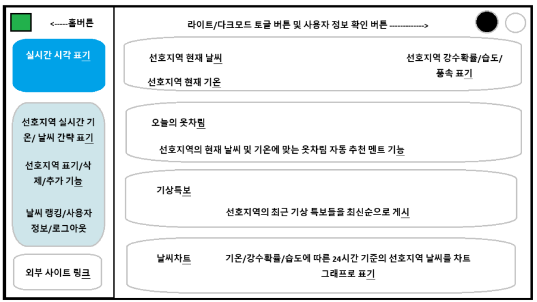
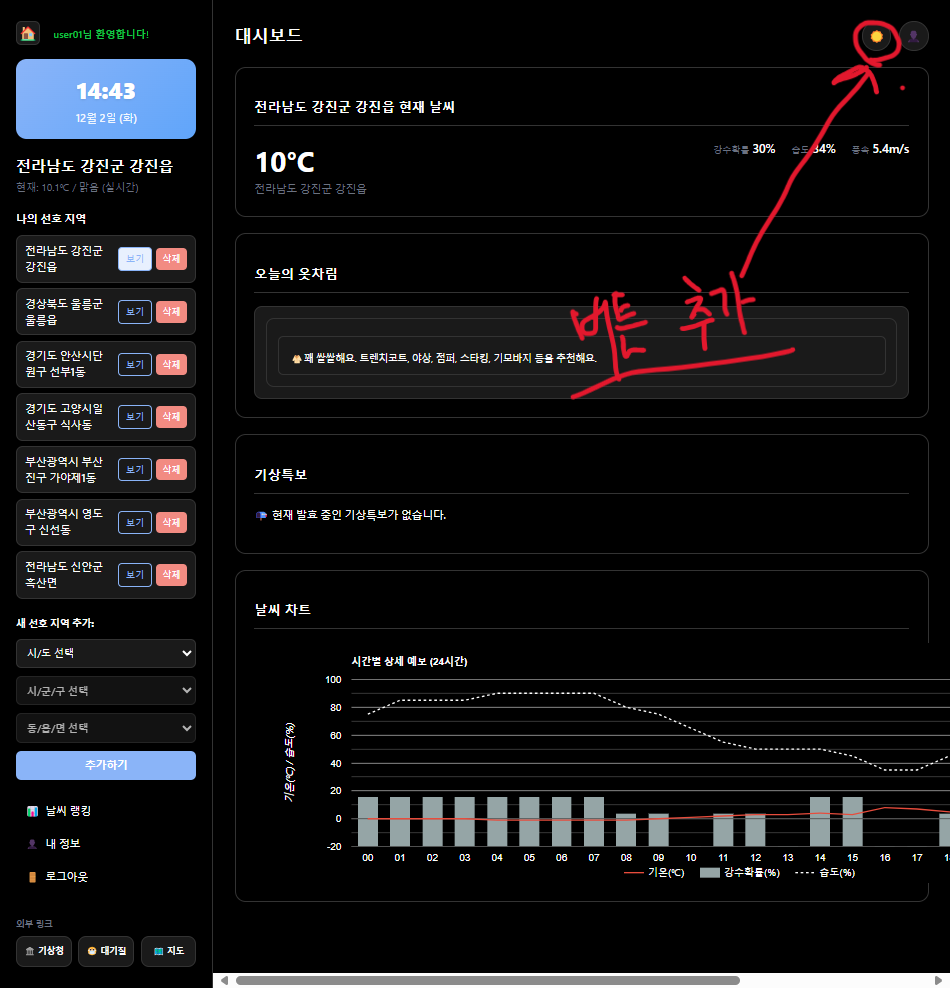
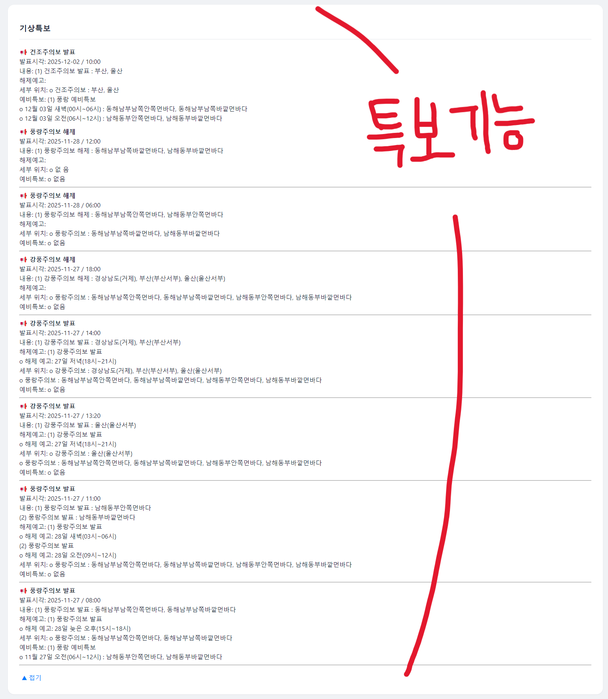

1. 프로젝트 개요
본 프로젝트는 프로젝트 교과목에서 요구하는 체계적 프로젝트 관리와 실제 서비스 구현 능력 향상을 목적으로 한다.
사용자의 지역을 기반으로 실시간 날씨 정보, 기상특보, 체감 요소 등을 한 화면에서 확인할 수 있는
데이터 기반 웹 대시보드를 구축하는 것이 핵심 목표이다.
단순한 기온·습도 조회를 넘어, 실시간 API 연동을 통한 고도화된 기상 정보 제공,
시각화를 활용한 높은 가독성의 차트 구성, 그리고 사용자 편의를 위한 다크모드/라이트모드 테마,
날씨별 옷차림 추천, 홈 버튼 이동 기능 등 다양한 기능을 적용하여 실제 활용 가능한 형태의 웹 서비스로 제작한다.
2. 데이터 설명
• 기상청 초단기·단기예보 API 활용: 기온, 습도, 풍속, 강수확률 등의 실시간 데이터 수집
• 미세먼지·초미세먼지 등 외부 환경 데이터 추가 연동 가능
• 지역별 날씨 지표를 바탕으로 자체 날씨 랭킹 로직 구성
• 기상특보 API 연동을 통해 사용자가 설정한 지역의 특보 상태 실시간 제공
• Google Chart 기반 시각화(막대그래프, 선그래프 등)를 통해 대시보드 정보를 직관적으로 표현
3. 화면설계 ※ 화면별 평가
※ 이미지를 클릭하면 크게 볼 수 있습니다.

3.1 로그인/회원가입 화면
- 사용자 계정 생성, 비밀번호 암호화 저장, 비밀번호 확인 기능 적용
3.2 메인 대시보드 화면
- 지역 설정 기능, 현재/예측 날씨 표출, Google Chart 기반 시각화 제공
- 날씨 랭킹 표시, 옷차림 추천 박스, 기상특보 실시간 연동
- 라이트/다크모드 테마 전환 토글 적용
- 사이드바 상단의 홈 버튼을 통한 빠른 메인 페이지 이동 기능 제공
3.3 부가 기능 화면
- 사용자 계정 관리, 관심지역 설정, 테마 설정 저장(localStorage 활용)
4. 기능목록 ※ 충분히 이해할 수 있도록 기능별 상세 기술
4.1 회원가입 및 로그인 기능
- 비밀번호 확인, 암호화 처리, 사용자의 기본 설정(지역/테마) 저장 기능 포함
4.2 실시간 날씨 정보 수집 및 표시 기능
- 기상청 API 연동을 통한 실시간 기상 데이터 로드
- 기온/습도/풍속/강수확률 등 기본 기상 정보 표시
4.3 기상특보 알림 기능
- 지역별 기상특보 적용 시 경고 메시지 출력
- 내용 길이에 따라 ‘더보기/접기’ 기능 지원
4.4 날씨 랭킹/옷차림 추천 기능
- 수집된 데이터를 기반으로 날씨 지표 랭킹 제공
- 현재 날씨에 맞춘 의상 추천 메시지 출력
4.5 라이트/다크모드 테마 기능
- 헤더 우측 토글 버튼으로 테마 변경
- localStorage 저장으로 새로고침 이후에도 테마 유지
4.6 홈 버튼 및 사이드바 내비게이션 기능
- 대시보드 메인으로 빠르게 이동 가능한 홈 아이콘 버튼 제공
4.7 애니메이션 UI 개선 기능(옵션)
- 화면 전환·요소 등장 시 부드러운 모션을 적용하여 사용자 경험 향상
5. 점검 시나리오
5.1 신규 회원가입 및 로그인 프로세스 점검
시나리오 1: 신규 사용자가 서비스에 접속하여 회원가입을 완료하고 로그인하는 과정 점검
테스트 단계:
1) 초기 화면(auth.html)에서 ‘회원가입’ 탭 선택
2) 아이디·비밀번호·비밀번호 확인 입력 후 ‘회원가입’ 클릭
3) “회원가입 완료” 메시지 확인 → 로그인 탭 이동
4) 방금 생성한 계정으로 로그인 시도
5) 예상 결과: 로그인 성공 시 대시보드(dashboard.php)로 이동하며
상단에 “(id)님 환영합니다!” 문구가 출력되어야 함
※ 이미지를 클릭하면 크게 볼 수 있습니다.

5.2 선호 지역 추가 및 실시간 날씨/옷차림 정보 확인
시나리오 2: 사용자가 거주 지역을 등록하고 실시간 날씨 및 옷차림 정보를 확인
테스트 단계:
1) 사이드바 ‘새 선호 지역 추가’에서 시/도 → 시/군/구 → 동/읍/면 순서 선택
2) ‘추가하기’ 버튼 클릭
3) 메인 대시보드 카드가 해당 지역으로 변경되는지 확인
4) 현재 기온/강수확률/습도/풍속 데이터 출력 확인
5) ‘오늘의 옷차림’ 문구가 날씨에 맞게 출력되는지 확인
예상 결과:
- 지역 목록에 새로운 지역이 정상 추가되어야 함
- 메인 카드에 해당 지역의 실시간 데이터가 표시되어야 함
- 기온(예: 11°C)에 맞는 옷차림(예: 트렌치코트, 니트 등)이 추천되어야 함
※ 이미지를 클릭하면 크게 볼 수 있습니다.
5.3 다크모드 전환 및 UI 시인성 점검
시나리오 3: 야간 환경 가정, 다크모드 적용 후 UI 변화를 점검
테스트 단계:
1) 대시보드 우측 상단 ‘🌙’ 토글 클릭
2) 배경색이 리얼 블랙(#000000)으로 전환되는지 확인
3) 지역 목록, 옷차림 박스, 차트 배경이 모두 다크 스타일로 변경되는지 체크
예상 결과:
- 전체 UI가 즉시 다크모드로 변환되어야 함
- 글자색은 흰색 계열로 반전되어야 함
- 페이지 새로고침 후에도 테마 설정이 유지(localStorage)되어야 함
※ 이미지를 클릭하면 크게 볼 수 있습니다.

5.4 날씨 랭킹 조회 및 홈 복귀 네비게이션
시나리오 4: 등록된 여러 지역의 날씨 순위를 확인하고 홈 버튼으로 대시보드 복귀
테스트 단계:
1) 서로 다른 지역 2개 이상을 등록
2) 사이드바 ‘날씨 랭킹’ 클릭
3) 기온이 낮은 순서대로 1~3위가 정렬되어 표시되는지 확인
4) 사이드바 상단 ‘🏠 홈’ 클릭
예상 결과:
- 랭킹 페이지에 지역별 기온이 내림차순으로 정렬되어야 함
- 홈 클릭 시 즉시 대시보드 화면으로 이동해야 함
※ 이미지를 클릭하면 크게 볼 수 있습니다.
5.5 기상특보 확인 및 지역 삭제
시나리오 5: 특정 지역의 기상특보 확인 후 지역 삭제 기능 점검
테스트 단계:
1) 대시보드 ‘기상특보’ 영역에서 특보 여부 확인
2) 특보가 있을 경우 내용이 정상 파싱·출력되는지 확인
3) 사이드바 ‘나의 선호 지역’에서 특정 지역의 삭제 버튼 클릭
4) 팝업에서 ‘확인’ 클릭 후 삭제 완료 여부 확인
예상 결과:
- 기상청 API 연동을 통해 특보 정보가 정확히 출력되어야 함
- 삭제한 지역은 목록 및 DB에서 즉시 제거되어야 함